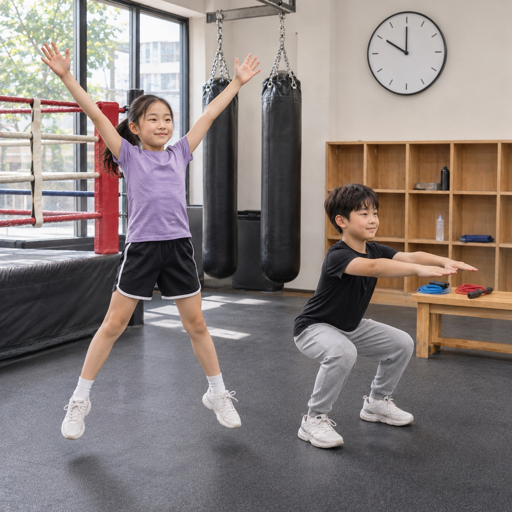
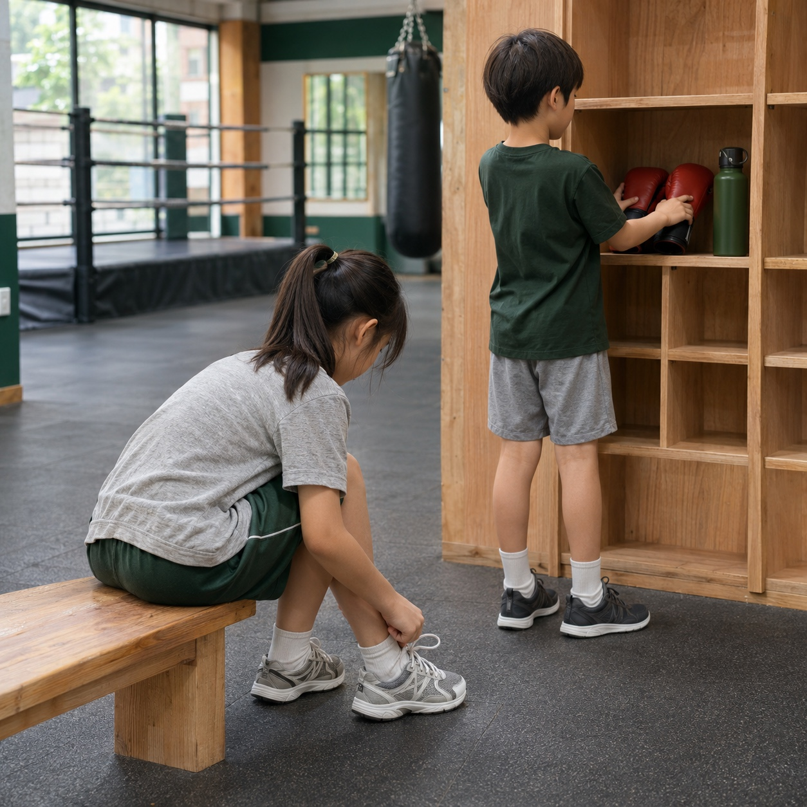
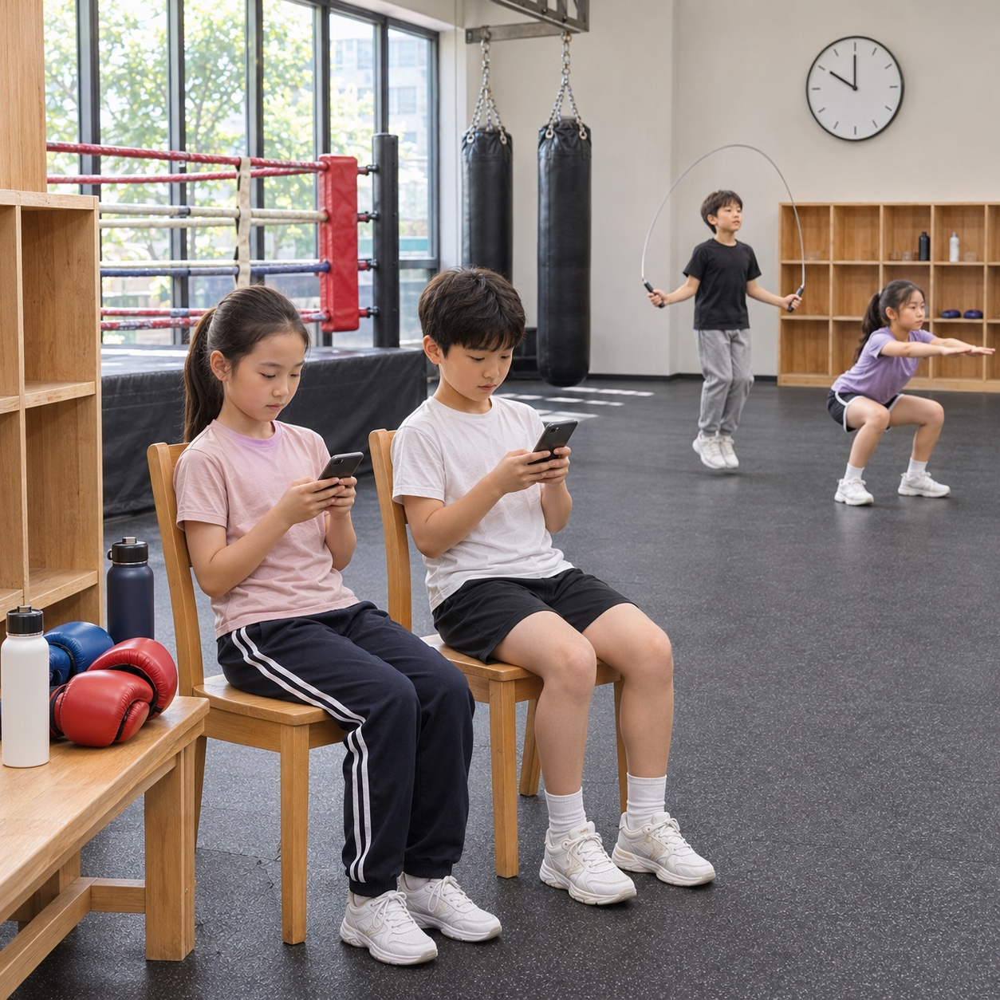
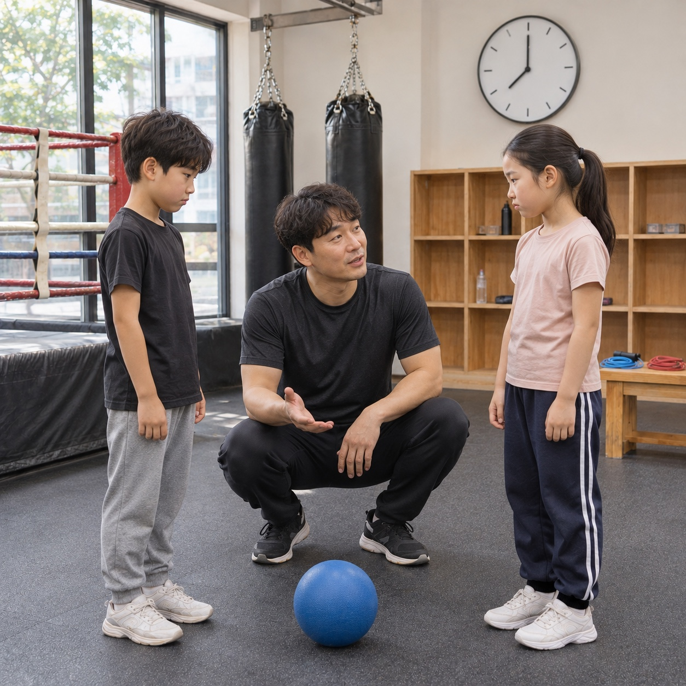
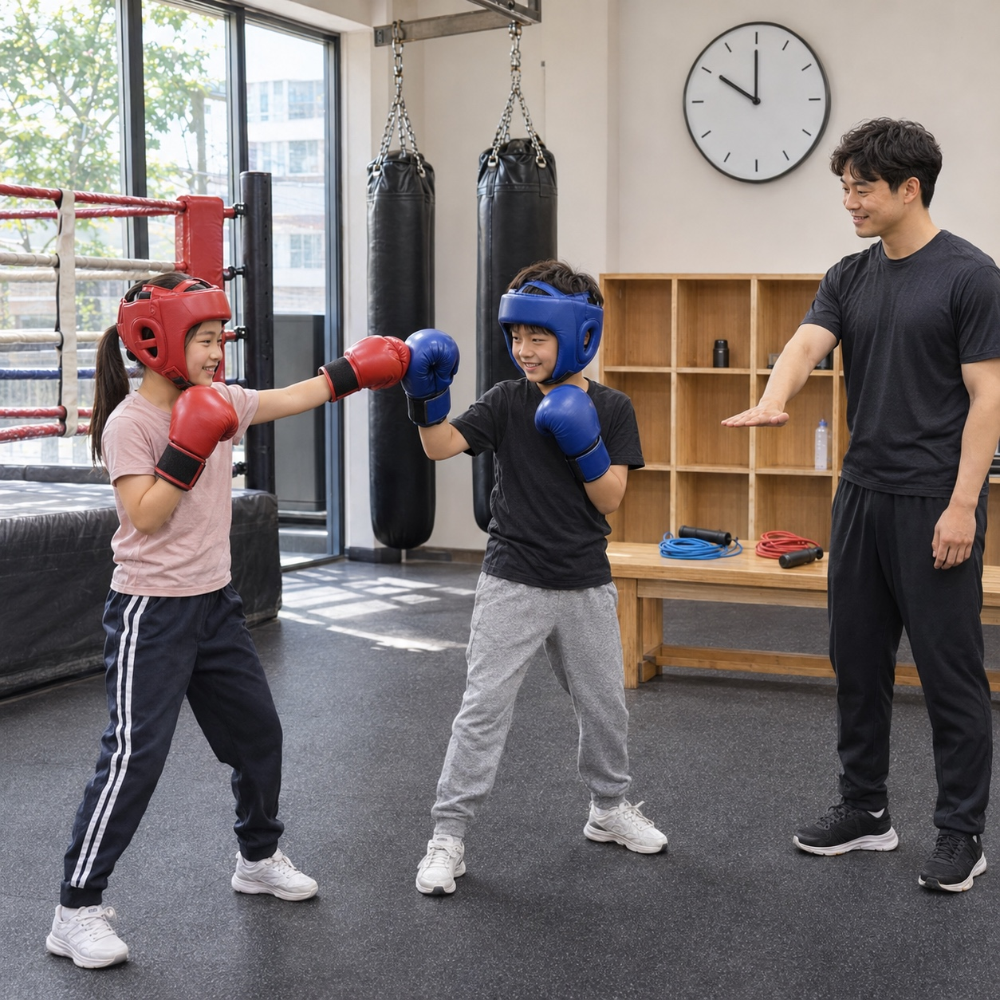

시간 약속은 ‘존중’입니다
지각 기준
다른 학원 일정을 마치고 이동하느라 어쩔 수 없이 늦는 경우는 예외입니다. 다만 특별한 사유 없이 아래처럼 늦으면 지각으로 처리합니다.
- 놓고 온 물건을 가지러 다시 다녀오는 경우
- 준비 시간을 생각하지 않고 정각에 도착해 수업 시작을 넘기는 경우
- 그 밖의 이유로 수업에 늦는 경우
늦을 때는 미리 연락
관장 연락처 010-4949-6433. 늦을 일이 생기면 바로 연락할 수 있도록 미리 저장해 주세요.
반복되는 지각
지각은 습관이 되기 쉽습니다. 2회 주의를 준 뒤에도 지각하면, 그때마다 지각으로 인한 조퇴를 진행합니다. 주의 횟수는 일정 기간마다 다시 셉니다.
수업 중 시간 약속
예를 들어 줄넘기를 마치고 “2분 안에 글러브 준비!” 하고 시간을 주면, 그 안에 준비를 마치고 바로 시작해야 합니다. 쉬는 시간에 장난치다 허둥지둥 준비하면 여러 사람의 시간을 빼앗고, 결국 내 운동 시간까지 줄어듭니다.
시간을 지키는 건 그 시간을 존중하는 일이고, 결국 내가 존중받는 방법입니다.
식사는 운동 최소 3시간 전에
- 운동 시작 최소 3시간 전까지 식사를 마쳐 주세요.
- 배가 부른 상태로 뛰고 움직이면 속이 불편해질 수 있습니다.
- 학교·학원 일정상 식사 시간이 애매하다면 가정에서 미리 시간을 조정해 주세요.
운동할 준비는 옷차림부터

착용할 수 없는 복장
청바지, 교복, 크록스, 학교 실내화는 착용할 수 없습니다. 발이 고정되지 않아 할 수 있는 운동이 제한되고, 다칠 위험도 커집니다.
신발은 러닝화
달리기용으로 만든 가벼운 운동화가 가장 좋습니다. 농구화처럼 무겁고 투박한 신발은 뛰고 움직이는 동작에 부담이 됩니다.
운동복 테스트
- 팔벌려뛰기 20회
- 스쿼트 10개
테스트하는 동안 옷으로 손이 가지 않아야 합니다. 바지를 추켜올리거나, 말려 올라간 상의를 내리거나, 어깨를 고쳐 잡는다면 수업 내내 같은 일이 반복됩니다.
외투
입고 운동해도 괜찮지만, 지퍼를 끝까지 잠그거나 벗어서 보관해야 합니다.
신발 끈 묶기
중학생이 되어서도 신발 끈을 못 묶는 경우가 생각보다 많습니다. 운동 중 끈이 풀리면 흐름이 끊기고 위험할 수 있으니 가정에서 꼭 연습시켜 주세요.
내 물건은 내가 챙깁니다

이름 붙이기
사물함은 문이 없는 개방형입니다. 개인 물품에는 반드시 이름을 붙여 주세요.
수거함
영업 종료 후 사물함 밖에 있는 물건은 모두 수거함에 넣어 둡니다.
- 찾아갈 때 부담금 1,000원(현금)
- 매주 금요일 영업 종료 시 폐기
부담금은 수익이 아니라, “내 물건을 관리하지 않으면 손해가 생긴다”는 걸 배우는 도구입니다.
공용 공간 정리
옷을 바닥이나 휴게 공간 테이블·의자에 두지 않습니다. 개인 사물함이나 공용 사물함(1일 락커, 하얀 사물함)을 이용하고, 공용 사물함은 그날 쓰고 그날 비웁니다.
신발
신발은 신발 사물함에 넣고, 실내화로 갈아 신고 이동합니다.
휴대폰, 조절하는 법

무조건 막는 대신, ‘쓸 수 있는 시간’과 ‘쓸 수 없는 시간’을 구분하는 연습을 합니다.
| 구분 | 내용 |
|---|---|
| 사용 가능 | 운동이 끝난 뒤 10분, 휴게 공간 의자에 앉아서만 |
| 사용 금지 | 체육관에 들어온 순간부터 운동이 끝날 때까지, 운동 공간 안 |
| 사용 금지 | 걸으면서, 움직이면서 사용 |
안전과 위생
안전
- 운동 공간에서는 넘어지지 않도록, 특히 쇠나 딱딱한 부분 쪽으로 넘어지지 않도록 주의합니다.
- 휴게 공간은 고무가 아닌 콘크리트 바닥이라 뛰어다니지 않습니다.
위생
지금은 공용 컵을 쓰고 있는데, 사용 전후에 씻는 원칙이 잘 지켜지지 않고 있습니다. 개인 물병 사용을 권장합니다.
태도·인사·말은 연습입니다
설명을 들을 때
돌아다니거나, 떠들거나, 지도자와 눈을 맞추지 않으면 경고 후 5분 퇴장합니다. 한 수업에서 3회 퇴장하면 규칙 미준수로 조퇴합니다.
체조할 때
손은 안 대고 무릎만 까딱까딱, 팔은 병아리 날갯짓처럼 파닥파닥. 이렇게 성의 없이 하면 역시 경고 후 퇴장합니다.
퇴장 뒤에는 개인 지도
운동이 끝나면 왜 그런 조치를 했는지, 왜 필요한지 아이가 이해하도록 이야기합니다.
조퇴할 때
- 아이가 먼저 부모님께 연락하도록 안내합니다.
- 다음 일정 장소로 이동하거나 귀가하도록 권합니다.
- 귀가 방법이나 연락 방법에 대해 상의할 내용이 있으면 언제든 말씀해 주세요. 010-4949-6433
인사
인사는 “당신과 좋은 관계를 시작하고 싶어요”라는 표현이자, 다음 만남을 약속하는 소통입니다. 대충 하는 인사는 “당신은 중요하지 않아요”라는 오해를 줄 수 있어 인사 지도는 빠짐없이 합니다.
써서는 안 되는 말
유튜브나 인터넷 영상, 특정 커뮤니티에서 나온 혐오·비하 표현을 뜻도 모르고 쓰는 경우가 많습니다. 이런 말이 들리면 운동을 멈추고 그 자리에서 왜 쓰면 안 되는지 설명합니다.
태도는 타고나는 게 아니라 연습의 결과입니다.
친구와 부딪힐 때, 그리고 힘 조절


“문제를 문제 삼지 않기”
한쪽이 문제를 일으킬 때 다른 쪽도 따지고 들면 싸움이 됩니다. 운동에 크게 방해되지 않는 일이면 그냥 넘기고, 불편하면 지도자에게 도움을 요청하도록 가르칩니다. 중재하는 사람은 언제나 있습니다. 바로 지도자입니다.
예시 · 공 하나를 두고 다툴 때
- 화를 내거나 손찌검을 하는 것 → 명백한 규칙 위반
- 공을 숨기는 것 → 상황에 따라 다름
- 대응하기 애매할 때는 ‘무시하기’가 가장 좋은 방법입니다. 쉽지 않기에 연습하며 사회성을 배웁니다.
참기만 하라는 뜻은 아닙니다
같은 친구가 계속 불편하게 하거나, 몸이나 마음이 다칠 정도라면 무시하지 말고 꼭 지도자에게 알리도록 가르칩니다. 지도자가 반드시 함께 해결합니다.
복싱이 가르쳐 주는 ‘힘 조절’
힘이 지나치면 관계는 한쪽으로 기울고 불평등해집니다. 복싱은 상대와 주고받는 운동이라, 서로 약속한 강도를 지키는 힘 조절이 꼭 필요합니다.
관계를 지키기 위해 힘을 조절하는 연습, 복싱만큼 좋은 운동은 없습니다.